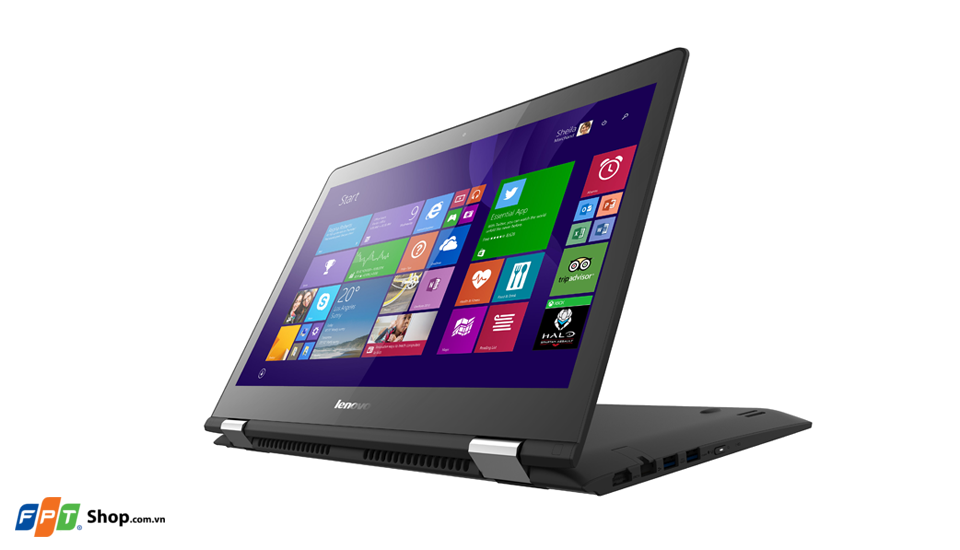
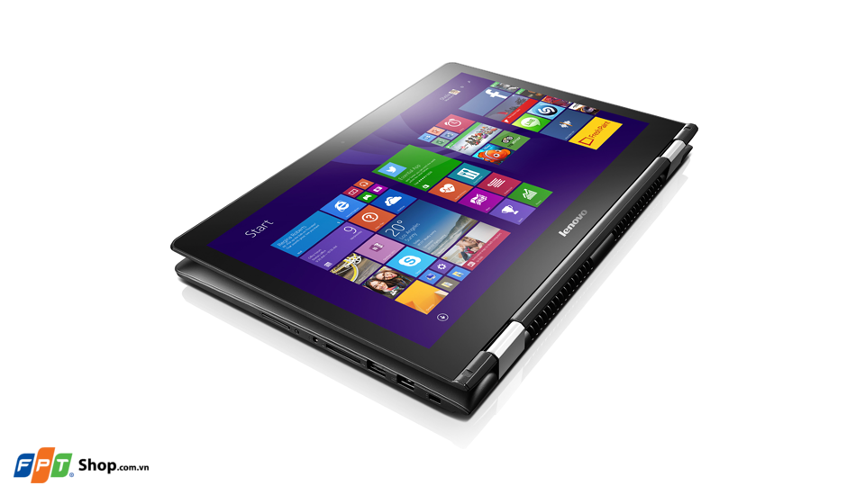
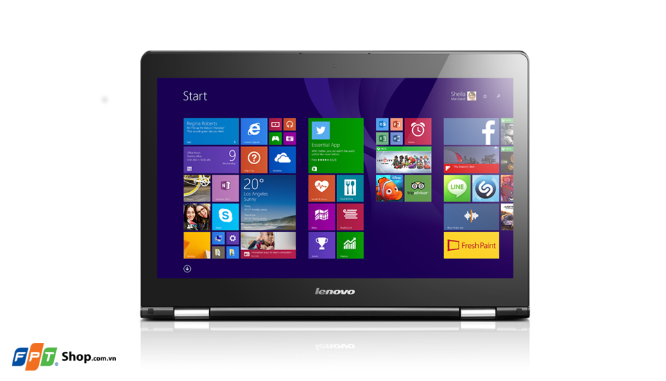
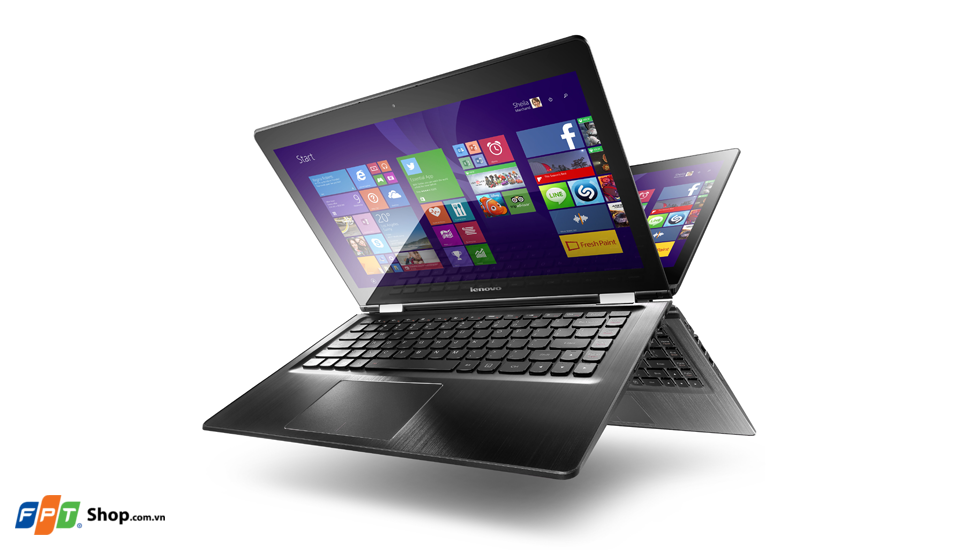
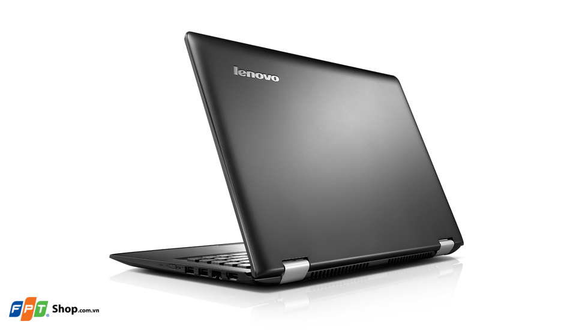

Yoga 500 là một chiếc laptop đa dụng đến từ Lenovo, với thiết kế đặc biệt cho khả năng xoay màn hình lên đến 360 độ để sử dụng như một chiếc máy tính bảng, cùng vô số tính tăng nổi bật khác.
Thiết kế độc đáo với khả năng xoay 360 độ
Điểm nổi bật đầu tiên ở thiết kế của máy. Bản lề trên Lenovo Yoga 500-14ISK được thiết kế một cách đặc biệt cho khả năng xoay 360 độ nhanh chóng, người dùng có thể gập màn hình hoàn toàn về phía sau và sử dụng như một chiếc máy tính bảng thông dụng. Với thiết kế tổng thể của máy vô cùng gọn nhẹ, giúp người dùng có thể sử dụng dễ dàng và tiện dụng hơn. Lớp vỏ của máy được hoàn thiện dạng nhựa được phủ sơn mịn, cho cảm giác sử dụng thoải mái và thích tay.
Cấu hình mạnh mẽ
Lenovo Yoga 500-14ISK được trang bị bộ vi xử lý Intel Core i5-6200U thuộc thế hệ chip thứ 6 Skylake, vừa cho hiệu năng mạnh mẽ, vừa đảm bảo thời lượng sử dụng lâu dài nhờ khả năng tiết kiệm pin hơn. Trong khi đó, với dung lượng RAM 4GB, khả năng đa nhiệm của máy cũng được nhấn mạnh khi cho khả năng sử dụng mượt mà, giúp người dùng có thể chơi game hay xem video chất lượng cao một cách dễ dàng. Ngoài ra, với dung lượng bộ nhớ trong 500GB, người dùng có thể lưu trữ dữ liệu thoải mái hơn.
Màn hình cảm ứng độ phân giải FullHD
Điểm cộng đối với Lenovo Yoga 500-14ISK chính là việc được trang bị màn hình có kích thước 14 inch cùng độ phân giải FullHD 1920x1080 pixel, cho khả năng hiển thị sắc nét, có độ trung thực cao, giúp cho người dùng có thể trải nghiệm đầy đủ và trọn vẹn nội dung của những bộ phim bom tấn hay những trò chơi đỉnh cao. Ngoài ra, màn hình còn được khả năng cảm ứng cùng khả năng chuyển đổi giao diện nhanh chóng, giúp người dùng có thể sử dụng máy như một chiếc máy tính bảng thông dụng.
Bàn phím đặc trưng, Touchpad nhanh nhạy
Bàn phím trên Lenovo Yoga 500-14ISK là dạng AccuType đặc trưng của Lenovo, vốn xuất phát từ bàn phím chiclet truyền thống nhưng được thiết kế cách điệu với hành trình vừa phải, độ nảy hợp lý cho trải nghiệm gõ phím của người dùng trở nên thích tay hơn, đảm bảo cho bạn có thể sử dụng trong thời gian dài và nhập liệu chính xác nhất. Touchpad của máy được hoàn thiện một cách tỉ mỉ với kích thước lớn, với độ nhạy vừa phải cho khả năng vuốt chạm một cách dễ dàng.
Kết nối đa dụng, hệ điều hành Windows 10
Nhằm đáp ứng nhu cầu sử dụng đa dạng của người dùng, Lenovo Yoga 500-14ISK được trang bị đầy đủ các cổng kết nối thông dụng hiện nay như HDMI, LAN, USB 3.0 để bạn có thể kết nối máy nhanh chóng với các thiết bị khác. Ngoài ra, máy còn sở hữu các chuẩn kết nối không dây như Bluetooth hay WiFi giúp bạn có thể kết nối một cách dễ dàng và tiện dụng hơn. Máy được cài sẵn hệ điều hành Windows 10, giúp tối ưu tốt nhất về hiệu năng cũng như khả năng sử dụng dành cho người dùng.